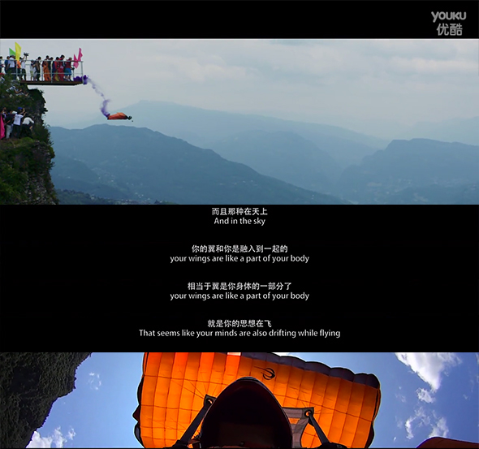

巴东——翼装飞行

巴东县位于湖北省西南部，长江中上游两岸，居恩施土家族苗族自治州的东北部，隶属恩施土家族苗族自治州，东连宜昌兴山、秭归、长阳，南接五峰、鹤峰，西交建始、重庆、巫山，北靠神农架林区。

运动员穿戴着拥有双翼的飞行服装和降落伞设备，运动员从飞机、热气球、悬崖绝壁、高楼大厦等高处一跃而下，飞行者运用肢体动作来掌控滑翔方向，用身体进行无动力空中飞行的运动，在到达安全极限的高度，运动员将打开降落伞平稳着落。
巴东县位于湖北省西南部，长江中上游两岸，居恩施土家族苗族自治州的东北部，隶属恩施土家族苗族自治州，东连宜昌兴山、秭归、长阳，南接五峰、鹤峰，西交建始、重庆、巫山，北靠神农架林区。
运动员穿戴着拥有双翼的飞行服装和降落伞设备，运动员从飞机、热气球、悬崖绝壁、高楼大厦等高处一跃而下，飞行者运用肢体动作来掌控滑翔方向，用身体进行无动力空中飞行的运动，在到达安全极限的高度，运动员将打开降落伞平稳着落。